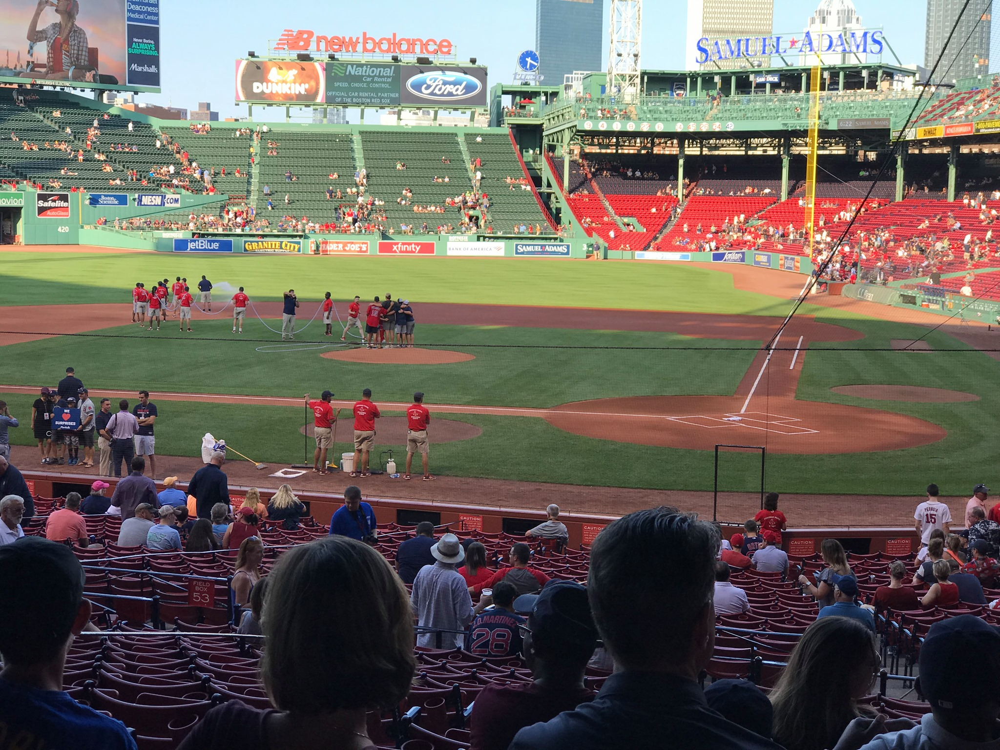

I am an avid sports fan. Despite being from Washington, I grew up in Massachusetts, which makes me a Red Sox and Patriots nut. I can hear the groans now, but loyalty is loyalty. I have been to Fenway Park (where the Red Sox play) numerous times and it's my favorite park. Unfortunatly, they are having a bit of a lazy season this year but I will keep the faith.
I am taking a bunch a prerequisites so most of my free time is playing catch up and learning all I can to eventually get into the program I was accepted into. So far it has been fun, I am trying to keep the stress low. Fingers crossed for now!
When I do get some time to myself I like to relax and play League of Legends. People that play that game will think it is a horrible thing to do to relief stress and they are absolutely right. I am trying out the new Gears of War game and that has been fun as well.
Along with all the study and game playing I am always listening to music. The Youtube radio that I linked is probably familiar to some people.
Last but not least, my wife does a wonderful job at getting me out of the house. It has been fun these past few weeks to explore Chicago and go to different events. We recently explored the aquarium and it's much better than Seattle's